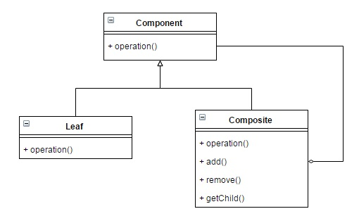

Composite Pattern by Juicyroach
Posted on JUL 06, 2016 at 12:00 PM

● 目地 : 完整代表樹狀結構的狀況
● 使用時機 : 當需要一個樹狀結構做為model時
● 想法 : 提供一個呼叫簡單的樹狀結構，應該具有完整且遞迴感覺的成式架構
● UML :
● 程式與解說 :
由於是結構部分的Design Pattern，是針對結構方面做設計
首先需先實作一抽象的Class，其中含有需共有的動作
public abstract class Component {
public String serialNumber;
public Component(String serialNumber) {
this.serialNumber = serialNumber;
}
public abstract void print();
}
接著是將Composite和Leaf的部分做出來
public class Bom extends Component {
List< Component > childs = new ArrayList< Component >();
public Bom(String serialNumber) {
super(serialNumber);
}
public void add(Component component) {
childs.add(component);
}
public void remove(Component component) {
if (childs.contains(component)) {
childs.remove(component);
}
}
@Override
public void print() {
System.out.println(this.serialNumber);
for (Component component : childs) {
component.print();
}
}
}
public class Part extends Component {
public Part(String serialNumber) {
super(serialNumber);
}
@Override
public void print() {
System.out.println(this.serialNumber);
}
}
其中Composite部分是複合的關鍵，因此通常都需要有Add和Remove功能
最後在使用此種架構的方式如下
public class ClientTest {
public static void main(String[] args) {
Bom bom69 =new Bom("69N0123456");
Bom bom65 =new Bom("65N0654321");
Bom bom60 =new Bom("60N0654321");
Part battery=new Part("08A0-0001000");
bom69.add(bom65);
bom65.add(bom60);
bom60.add(battery);
bom69.print();
}
}